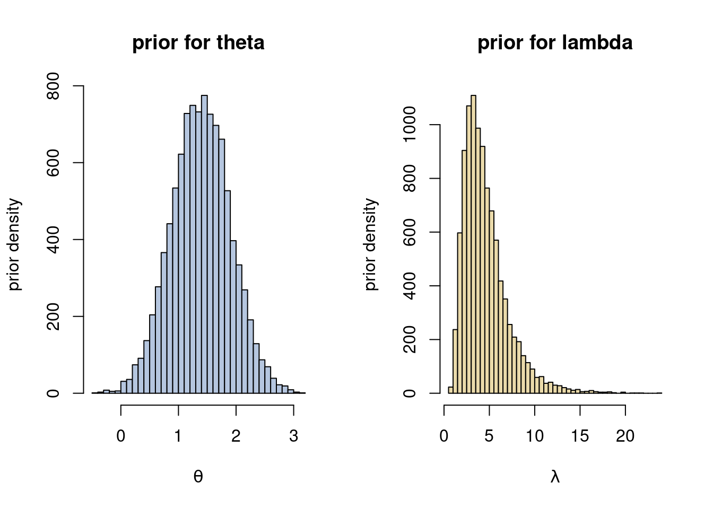
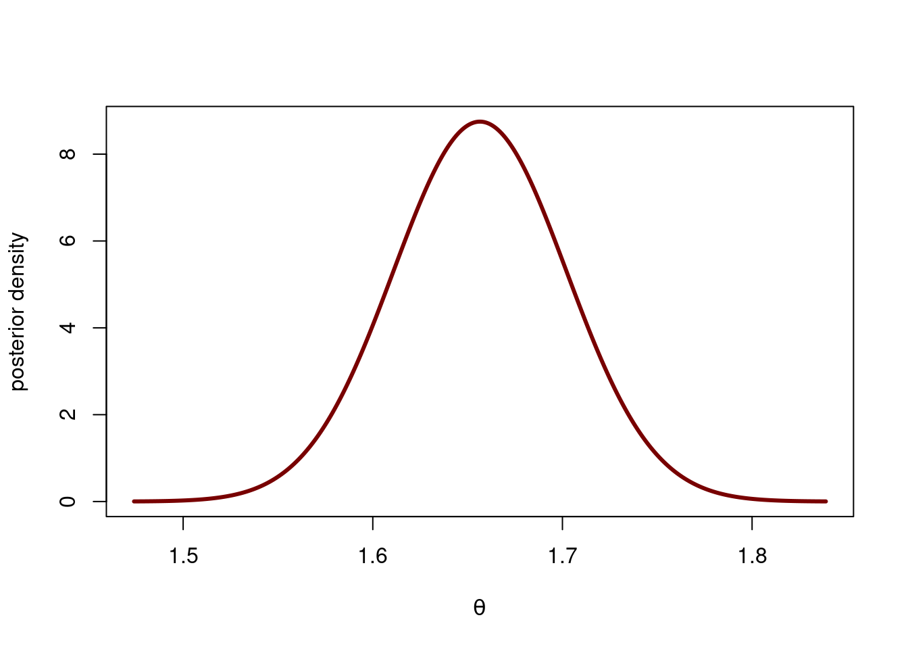
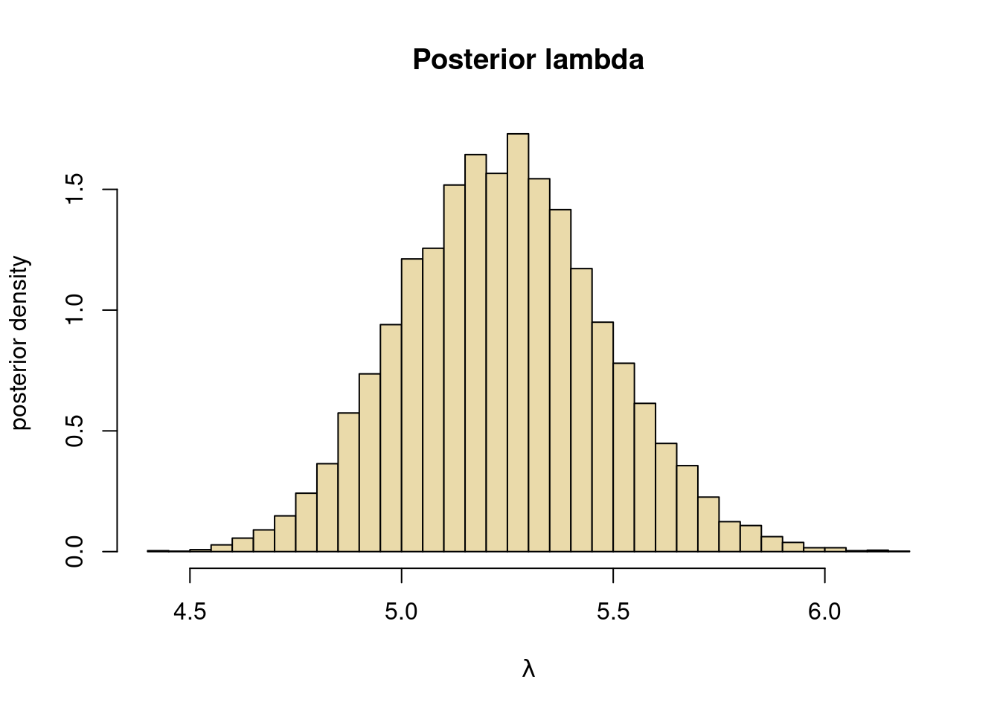

Normal posterior approximation - iid Poisson model
Problem 5 - Normal approximation
The file bugs.csv contains a dataset with the number of bugs and some other explanatory variables for \(n=91\) releases of several software projects. We will here do a Bayesian analysis using only the variable nBugs, which we will store in a vector y, for simplicity. Load the data like this:
You can ignore that some of the observations actually comes from the same project at different releases, and assume that the observations are independent and identically distributed. Consider first the model
\[Y_1,Y_2,\ldots,Y_n \vert \lambda \overset{iid}{\sim}\mathrm{Poisson}(\lambda),\]
where the parameter \(\lambda = \mathbb{E}(Y)\) must be positive. Our interest is in obtaining the posterior distribution for \(\lambda\). If we use the conjugate Gamma prior we can obtain the posterior in closed form (it is also Gamma). We will however use a normal posterior approximation here, since next problem will extend the model to a Poisson regression model with covariates, and for that model there is no conjugate prior.
A normal approximation of the posterior for \(\lambda\) is not a great idea, however; a normal approximation can give probability mass on negative values for \(\lambda\), and we need to have \(\lambda>0\) in the Poisson model. We therefore instead parameterize the Poisson model as
\[Y_1,Y_2,\ldots,Y_n \vert \theta \overset{iid}{\sim}\mathrm{Poisson}(\exp(\theta))\]
where \(\theta\) can be any value on the real line \(-\infty < \theta <\infty\) because the exponential function makes sure that \(\lambda = \exp(\theta) >0\). This kind of reparameterization usually makes the posterior more normal and the approximation more accurate. An additional benefit of working the \(\theta\) is that we can use unconstrained maximization without specifying a bound in the optimizer.
A Normal posterior approximation for \(\theta\) implies a LogNormal approximation of the posterior for \(\lambda = \exp(\theta)\), which therefore guarantees that all posterior probability mass is on positive values of \(\lambda\).
LogNormal distribution
Recall the definition of a LogNormal distribution:
If \(X \sim N(\mu\, \sigma^2)\) then \(Y=\exp(X)\sim \mathrm{LogNormal}(\mu, \sigma^2)\).
Use the prior \(\theta \sim N(\log(4), 0.5^2)\) which implies a LogNormal prior for \(\lambda\). The prior in both parameterizations are plotted below.
nSim = 10000
thetaDraws = rnorm(nSim, mean = log(4), sd = 0.5)
lambdaDraws = exp(thetaDraws)
par(mfrow = c(1,2))
hist(thetaDraws, 50, xlab = expression(theta), ylab = "prior density", col = prettycols[5], main = paste("prior for", expression(theta)))
hist(lambdaDraws, 50, xlab = expression(lambda), ylab = "prior density", col = prettycols[6], main = paste("prior for", expression(lambda)))
Problem 5a)
Do a normal approximation of the posterior distribution of \(\theta\) using optimization and plot that normal approximation. Use this posterior approximation for \(\theta\) to simulate the approximate posterior of \(\lambda = \exp(\theta)\).
Solution 5a)
We start by setting up the (unnormalized) log posterior by coding up the log-likelihood and the log-prior and finally adding them up:
We use the optim function to maximize the log posterior (with the argument control=list(fnscale=-1) that multiplies the objective function by \(-1\) to turn the problem into a minimization problem, which is what optim handles). The initial value is set to \(0\) for simplicity ( \(\log(\bar y)\) would have been better).
mu0 = log(4)
tau0 = 0.5
initVal <- 0;
OptimResults<-optim(initVal, LogPostPoisson, gr=NULL, y, mu0, tau0,
method = c("BFGS"), control=list(fnscale=-1), hessian=TRUE)
postMode = OptimResults$par[1]
postVar = -1/OptimResults$hessian[1] # inv(J) - Approx posterior variance
postStd <- sqrt(postVar) # Approximate stdev
message("The posterior mode is ", round(postMode, 3), " and the approximate posterior standard deviation is ", round(postStd, 3), ".") The posterior mode is 1.657 and the approximate posterior standard deviation is 0.046.Hence the approximate posterior is
\[ \theta \vert \boldsymbol{y} \overset{\mathrm{approx}}{\sim} N(1.657, 0.046) \]
thetaGrid = seq(postMode - 4*postStd, postMode + 4* postStd, length = 1000)
plot(thetaGrid, dnorm(thetaGrid, postMode, postStd), type = "l", lwd = 3,
xlab = expression(theta), ylab = "posterior density", col = prettycols[3])
Problem 5b)
Use the posterior approximation for \(\theta\) in Problem 5a) to simulate from the approximate posterior of \(\lambda = \exp(\theta)\). Plot a histogram.
Solution 5b)
nSim = 10000
thetaDraws = rnorm(nSim, postMode, postStd)
lambdaDraws = exp(thetaDraws)
hist(lambdaDraws, 50, freq = FALSE, col = prettycols[6],
xlab = expression(lambda), ylab = "posterior density", main = "Posterior lambda")
This posterior is slightly skewed (we actually know it is logNormal).

Bayesian Learning